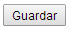

Herramientas
Al ingresar a la pantalla de herramientas, se le presentará la lista con los datos de las herramientas cargados en el sistema.
Para cada fila de la tabla, es decir, para cada herramienta, las opciones disponibles de edición o borrado se encuentran en la columna acciones

Editar herramientas
Para realizar la edición, haga click en el icono del lápiz  al lado de la herramienta que desea modificar.
al lado de la herramienta que desea modificar.
Será conducido a una nueva pantalla donde se cargan automáticamente los datos de la herramienta seleccionada.
En esta pantalla usted puede cambiar la descripción de la herramienta.
Al finalizar la edición, con el botón  podrá hacer efectivos los cambios.
podrá hacer efectivos los cambios.
En el caso que desee cancelar la edición, puede acceder a la página anterior haciendo click sobre “herramientas” en la barra de navegación de la esquina superior izquierda
Borrar herramienta
Para realizar la baja, haga click en el icono del cesto  al lado de la herramienta que desea borrar.
al lado de la herramienta que desea borrar.
Se le pedirá una confirmación antes de realizar la baja.
En caso que ya no quiera realizar el borrado, el botón cancelar lo llevara nuevamente a la lista de herramientas sin haber borrado la herramienta seleccionada.
En caso de aceptar, se borrará la herramienta de la lista, y será redirigido a la página actualizada de la lista de herramientas.
Agregar herramienta
Para agregar una nueva herramienta, haga click en el vínculo en la mitad superior de la pantalla “Agregar herramienta”
Será conducido a una nueva pantalla donde se encuentran los campos disponibles para cargar los datos de la nueva herramienta.
Descripcion: ingrese la descripción de la herramienta
Cantidad: ingrese la cantidad de la herramienta.
Al finalizar la carga, con el botón  podrá hacer efectivos los cambios.
En el caso que desee cancelar el alta, puede acceder a la página anterior haciendo click sobre “herramientas” en la barra de navegación de la esquina superior izquierda